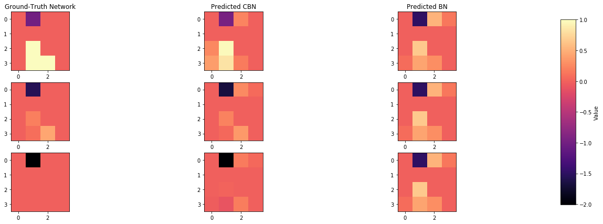
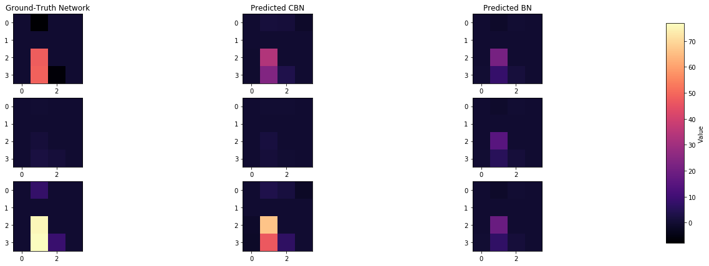
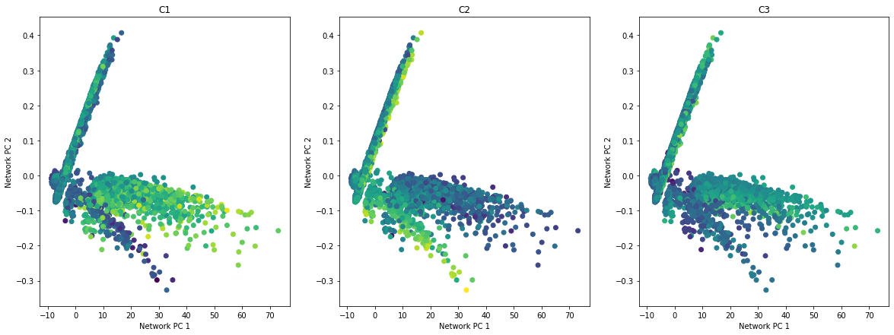
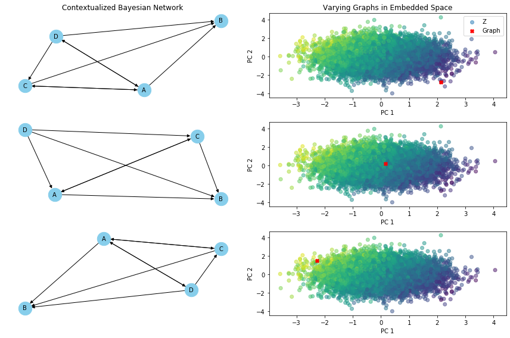
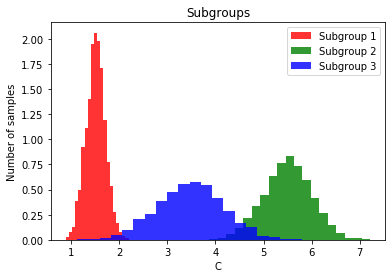
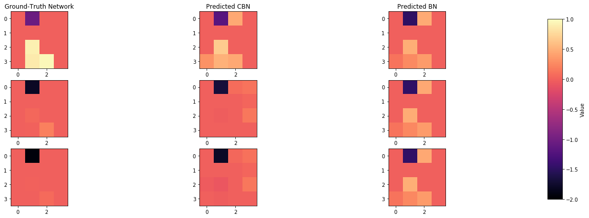
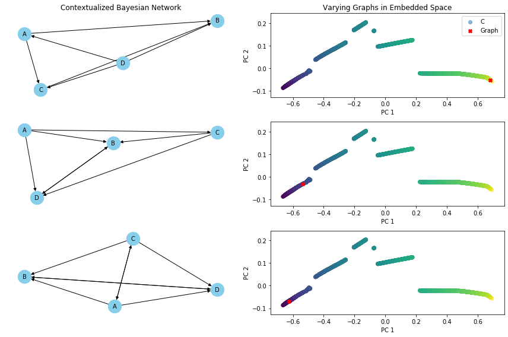
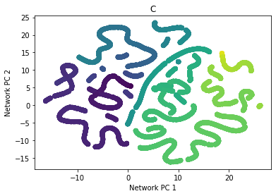
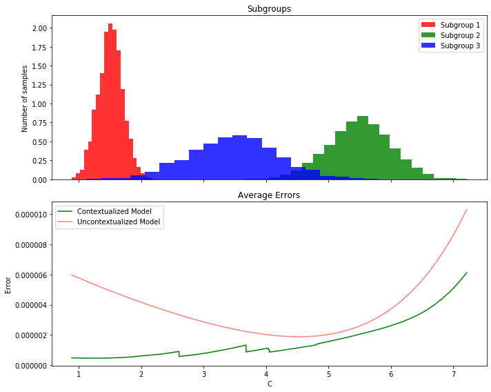

Benefits of Contextualized#
Contextualized Enables High-Resolution Heterogeneity#
By sharing information between all contexts, contextualized learning is able to estimate heterogeneity at fine-grained resolution. Cluster or cohort-based models treat every partition independently, limiting heterogeneity to coarse-grained resolution where there are large enough cohorts for independent estimation.
Problem Definition#
In this examples we are interested in learning Bayesian Networks (BNs) which are context-specific; i.e., the parameters and/or structure of the BNs may vary according to context. In this problem, for each observation \(X∈R^p\), we also observe contextual data \(C∈R^m\). We believe \(X\) is generated by a network defined by \(W\), which has parameters dependent on \(C\). Based on the latter, we can describe this as factorizing \(P(X, C) = \int_W{dW P(X|W)P(W|C)P(C)}\); where \(P(X|W)=BN(X|W)\) is the distribution implied by the BN structure \(W\).
# We need a few libraries
import numpy as np # for linear algebra operations
import pandas as pd # for data manipulation
import networkx as nx # for drawing graphs
import matplotlib.pyplot as plt # for drawing graphs
from matplotlib.gridspec import GridSpec
import umap
from sklearn.decomposition import PCA
from sklearn.preprocessing import MinMaxScaler
from IPython.utils import io # to manage the output of some functions
from rich import print
%matplotlib inline
import warnings
warnings.filterwarnings("ignore")
We then import the contextualized library, define \(n\) simulated samples with context \(C\). \(X\) depends on the BN defined by \(W\), and is simulated using the helper function simulate_linear_sem, which simulates samples from linear structural equation modeling.
import contextualized
simulate_linear_sem = contextualized.dags.graph_utils.simulate_linear_sem
def W_X(n, C):
# W is the adjacency matrix that defines the BN
W = np.zeros((4, 4, n, 1))
W[0, 1] = C - 2
W[2, 1] = C**2
W[3, 1] = C**3
W[3, 2] = C
W = np.squeeze(W)
W = np.transpose(W, (2, 0, 1))
# X is the gene expression
X = np.zeros((n, 4))
for i, w in enumerate(W):
x = simulate_linear_sem(w, 1, "uniform", noise_scale=0.1)[0]
X[i] = x
return W, X
# number of samples
n = 10000
# C is the context
C = np.random.choice([1,5,10], size=(n, 1))
scaler = MinMaxScaler()
C = scaler.fit_transform(C)
W, X = W_X(n, C)
from contextualized.easy import ContextualizedBayesianNetworks
import logging
logging.getLogger("pytorch_lightning").setLevel(logging.ERROR)
cbn = ContextualizedBayesianNetworks(
encoder_type='mlp', num_archetypes=16,
n_bootstraps=2, archetype_dag_loss_type="DAGMA", archetype_alpha=0.,
sample_specific_dag_loss_type="DAGMA", sample_specific_alpha=1e-1,
learning_rate=1e-3)
cbn.fit(C, X, max_epochs=10)
We define a population model as being context-invariant. Therefore, if we consider a constant \(C\) for all the iid samples, we are indirectly defining a population model. We use this idea to compare the performance of contextualized against not-contextualized BNs.
const_C = np.ones((n, 1))
const_C = scaler.transform(const_C)
bn = ContextualizedBayesianNetworks(
encoder_type='mlp', num_archetypes=16,
n_bootstraps=2, archetype_dag_loss_type="DAGMA", archetype_alpha=0.,
sample_specific_dag_loss_type="DAGMA", sample_specific_alpha=1e-1,
learning_rate=1e-3)
bn.fit(const_C, X, max_epochs=10)
def print_error(cbn, bn, C, W, n):
error_context = np.mean(((cbn.predict_networks(C) - W) ** 2) / n)
error_uncontext = np.mean(((bn.predict_networks(C) - W) ** 2) / n)
print(f'[bold green]Contextualized Model\'s Mean Squared Error = [bold cyan]{error_context:.2}')
print(f'[bold green]Not-Contextualized Model\'s Mean Squared Error = [bold cyan]{error_uncontext:.2}')
print_error(cbn, bn, C, W, n)
Contextualized Model's Mean Squared Error = 2.4e-06
Not-Contextualized Model's Mean Squared Error = 7.1e-06
def plot_adjacency_matrix(W, cbn, bn, C, idx1, idx2, idx3, c_cs = False):
# Predict and visualize network
predicted_contextualized_networks = cbn.predict_networks(C)
predicted_networks = bn.predict_networks(C)
print(f'[bold green] Comparison of inferred BNs')
f, axarr = plt.subplots(3, 3, figsize=(20, 7))
cmap = 'magma'
a1 = axarr[0,0].imshow(W[idx1], cmap=cmap)
b1 = axarr[0,1].imshow(predicted_contextualized_networks[idx1], cmap=cmap)
c1 = axarr[0,2].imshow(predicted_networks[idx1], cmap=cmap)
a2 = axarr[1,0].imshow(W[idx2], cmap=cmap)
b2 = axarr[1,1].imshow(predicted_contextualized_networks[idx2], cmap=cmap)
c2 = axarr[1,2].imshow(predicted_networks[idx2], cmap=cmap)
a3 = axarr[2,0].imshow(W[idx3], cmap=cmap)
b3 = axarr[2,1].imshow(predicted_contextualized_networks[idx3], cmap=cmap)
c3 = axarr[2,2].imshow(predicted_networks[idx3], cmap=cmap)
all_netw = np.concatenate([W, predicted_contextualized_networks, predicted_networks])
if c_cs:
all_netw = np.concatenate([W[[idx1, idx2, idx3]],
predicted_contextualized_networks[[idx1, idx2, idx3]],
predicted_contextualized_networks[[idx1, idx2, idx3]]])
for j in range(1, 4):
for l in ('a', 'b', 'c'):
exec(f'{l}{j}.set_clim(np.min(all_netw), np.max(all_netw))')
axarr[0,0].set_title("Ground-Truth Network")
axarr[0,1].set_title("Predicted CBN")
axarr[0,2].set_title("Predicted BN")
# Add colorbar next to the entire plot
cbar_ax = f.add_axes([0.92, 0.15, 0.02, 0.7]) # Define the position and size of the colorbar
cbar = f.colorbar(a1, cax=cbar_ax)
cbar.set_label('Value')
plt.subplots_adjust(right=0.85) # Adjust the right margin to make space for the colorbar
plt.show()
index_of_1 = np.where(C == 1)[0][0]
index_of_2 = np.where(np.isclose(C, 0.4, atol = 0.099))[0][0]
index_of_3 = np.where(C == 0)[0][0]
plot_adjacency_matrix(W, cbn, bn, C, index_of_1, index_of_2, index_of_3)
Comparison of inferred BNs

Contextualized Enables Analysis of Latent Processes#
Cluster or cohort models are inferred by partitioning data into groups, assumed to be iid (independent identically distributed), and estimating models for each groups. This is only likely to be satisfied when contexts are discrete, low-dimensional, and every context-specific population is well observed. In real life, contexts are often continuous, high dimensional, and sparsely observed. When cluster or cohort approaches are applied in these circumstances, downstream modeling tasks are distorted by mis-specification, where many non-id samples are funneled into a single model. Consequently, there are no theoretical guarantees in many real life circumstances about how well a cluster or cohort model can represent heterogeneous populations. Alternatively, contextualized learning provides a way to estimate latent, non-id models for all samples with minimal assumptions about the grouping or clustering of these samples, or the functional relationship between latent models and contexts. Samples can then be grouped on the basis of model parameters and distributional differences to produce clusters in the latent model space underlying each sample. Contextualized ML intuitively recovers latent structures underlying data generation in a way a priori clustering cannot. Allowing downstream models to determine the grouping of samples rather than upstream contexts replaces traditional cluster analysis with contextualized analysis clusters.
Following the example depicted above, let’s suppose the there is a variable \(Z\) that we cannot observe and depends on the covariates \(C\). This variable will affect the structure \(W\) and therefore \(X\). In our example, we suppose that \(Z\) is modeled by \(Z = \beta(C) + \epsilon\). We, therefore, consider a latent variable \(Z \in \R^{K}\) such that \(C \bot (X, W) | Z\).
The relative probabilistic model is then \(P(W|X, C) \propto P(W|X) \int_Z dZ P(W|Z) P(Z|C) \); where \(P(X|W) = BN(X|W)\).

# number of samples
n = 10000
# Covariates C
C = np.random.normal(1, 1, (n, 3))
# beta
beta = np.array([[1.5], [-1.5], [0.5]], dtype=np.float64)
# Latent Variable Z
Z = np.matmul(C, beta) + 0.5
# W is the adjacency matrix that defines the BN
W = np.zeros((4, 4, n, 1))
W[0, 1] = Z - 1
W[2, 1] = Z**2
W[3, 1] = Z**2 + 1
W[3, 2] = Z
W = np.squeeze(W)
W = np.transpose(W, (2, 0, 1))
# X is the gene expression
X = np.zeros((n, 4))
for i, w in enumerate(W):
x = simulate_linear_sem(w, 1, "uniform", noise_scale=0.1)[0]
X[i] = x
#W, X = W_X(n, Z)
cbn = ContextualizedBayesianNetworks(
encoder_type='mlp', num_archetypes=16,
n_bootstraps=2, archetype_dag_loss_type="DAGMA", archetype_alpha=0.,
sample_specific_dag_loss_type="DAGMA", sample_specific_alpha=1e-1,
learning_rate=1e-3)
cbn.fit(C, X, max_epochs=10)
const_C = np.ones((n, 3))
bn = ContextualizedBayesianNetworks(
encoder_type='mlp', num_archetypes=16,
n_bootstraps=2, archetype_dag_loss_type="DAGMA", archetype_alpha=0.,
sample_specific_dag_loss_type="DAGMA", sample_specific_alpha=1e-1,
learning_rate=1e-3)
bn.fit(const_C, X, max_epochs=10)
print_error(cbn, bn, C, W, n)
Contextualized Model's Mean Squared Error = 0.00012
Not-Contextualized Model's Mean Squared Error = 0.0016
index_of_1 = np.where(Z == np.min(Z))[0][0]
index_of_2 = np.where(np.isclose(Z, np.mean(Z), 0.09))[0][0]
index_of_3 = np.where(Z == np.max(Z))[0][0]
plot_adjacency_matrix(W, cbn, bn, C, index_of_1, index_of_2, index_of_3, c_cs=True)
Comparison of inferred BNs

def plot_embedding_for_all_covars(networks, covars_df):
n = covars_df.shape[1]
fig, axarr = plt.subplots(1, n, figsize=(20, 7))
for i, covar in enumerate(covars_df.columns):
axarr[i].scatter(networks[:, 0], networks[:, 1], c=covars_df[covar])
axarr[i].set_xlabel("Network PC 1")
axarr[i].set_ylabel("Network PC 2")
axarr[i].set_title(covar)
predicted_contextualized_networks = cbn.predict_networks(C)
#low_dim_networks = umap.UMAP().fit_transform(predicted_contextualized_networks.reshape((n, -1)))
low_dim_networks = PCA(n_components=2).fit_transform(predicted_contextualized_networks.reshape((n, -1)))
plot_embedding_for_all_covars(low_dim_networks[:, :2], pd.DataFrame(C, columns=['C1', 'C2', 'C3']),)

\(Z\) is a latent variable that depends on \(C\), and also defines the structures of the networks \(W\). We visualize how \(Z\) is distributed in the embedded space of \(C\), and how \(W\) changes accordingly.
def varying_graph(C, cbn, var, index_of_1, index_of_2, index_of_3):
predicted_contextualized_networks = cbn.predict_networks(C)
pca = PCA(n_components=2)
if var == 'Z':
embedded_space = pca.fit_transform(C)
elif var == 'C':
embedded_space = pca.fit_transform(predicted_contextualized_networks.reshape((n, -1)))
graphs_idxs = [index_of_1, index_of_2, index_of_3]
graphs = predicted_contextualized_networks[graphs_idxs]
fig = plt.figure(figsize=(12, 8))
gs = GridSpec(3, 2)
for idx, random_graph in enumerate(graphs):
# Apply the same dimensionality reduction to the graph-specific covariates
if var == 'Z':
embedded_graph = pca.transform([C[graphs_idxs[idx]]])
elif var == 'C':
embedded_graph = pca.transform([predicted_contextualized_networks.reshape((n, -1))[graphs_idxs[idx]]])
# Define graph and add nodes
G = nx.DiGraph()
nodes = ['A', 'B', 'C', 'D']
for node_label in nodes: G.add_node(node_label)
for i in range(W.shape[1]):
for j in range(W.shape[2]):
if random_graph[i][j] != 0:
G.add_edge(nodes[i], nodes[j])
ax_network = fig.add_subplot(gs[idx, 0])
if idx == 0: ax_network.set_title("Contextualized Bayesian Network")
# Set the layout for the graph (e.g., hierarchical layout)
pos = nx.spring_layout(G)
# Plot the graph
nx.draw(G, pos, with_labels=True, node_size=500, node_color='skyblue', font_size=10, font_color='black', arrowsize=10, ax=ax_network)
ax_scatter = fig.add_subplot(gs[idx, 1])
# Plot the graph in the embedded space
ax_scatter.scatter(
data=pd.DataFrame({'PC1': embedded_space[:, 0], 'PC2': embedded_space[:, 1], f'{var}': eval(f'{var}').ravel()}),
x = 'PC1', y = 'PC2', c=f'{var}', alpha=0.5, label = f'{var}') # Plot the embedded space
ax_scatter.scatter(embedded_graph[:, 0], embedded_graph[:, 1], c='red', marker='X', label='Graph') # Plot the graph
ax_scatter.set_xlabel('PC 1')
ax_scatter.set_ylabel('PC 2')
if idx == 0:
ax_scatter.set_title('Varying Graphs in Embedded Space')
ax_scatter.legend()
plt.tight_layout()
plt.show()
varying_graph(C, cbn, 'Z', index_of_1, index_of_2, index_of_3)

Contextualized Interpolates Between Observed Contexts#
By learning to translate contextual information into model parameters, contextualized models learn about the meta-distribution of contexts. As a result, contextualized models can adapt to contexts which were never observed in the training data by interpolating between observed contexts or extrapolating to new contexts.
Le’s assume we observe a certain set of contexts in our initial population, how well does the contextualized model generalize to new/unobserved contexts?
# number of samples
n = 10000
# C is the context
# C in [1,2] & [5,6] for the initial population
# C in [2,5] for the unobserved population
fraction = n//8
# Generate values for each subgroup using normal distributions
subgroup1 = np.random.normal(loc=1.5, scale=0.2, size=2 * fraction) # Mean=1.5, Std=0.2
subgroup2 = np.random.normal(loc=5.5, scale=0.5, size=4 * fraction) # Mean=5.5, Std=0.5
subgroup3 = np.random.normal(loc=3.5, scale=0.7, size=2 * fraction) # Mean=3.5, Std=0.7
# Concatenate the subgroups to create the vector C
C = np.concatenate([subgroup1, subgroup2, subgroup3]).reshape((n, 1))
scaler = MinMaxScaler()
C = scaler.fit_transform(C)
# W is the adjacency matrix that defines the BN
W = np.zeros((4, 4, n, 1)) # 4 genes and n adjacency matrices
W[0, 1] = C - 2
W[2, 1] = C**2
W[3, 1] = C**3
W[3, 2] = C
W = np.squeeze(W)
W = np.transpose(W, (2, 0, 1))
# X is the gene expression
X = np.zeros((n, 4))
for i, w in enumerate(W):
x = simulate_linear_sem(w, 1, "uniform", noise_scale=0.1)[0]
X[i] = x
plt.hist(subgroup1, bins=20, alpha=0.8, color='r', label='Subgroup 1', density=True)
plt.hist(subgroup2, bins=20, alpha=0.8, color='g', label='Subgroup 2', density=True)
plt.hist(subgroup3, bins=20, alpha=0.8, color='b', label='Subgroup 3', density=True)
plt.xlabel('C')
plt.ylabel('Number of samples')
plt.title('Subgroups')
plt.legend()
plt.show()

cbn = ContextualizedBayesianNetworks(
encoder_type='mlp', num_archetypes=16,
n_bootstraps=2, archetype_dag_loss_type="DAGMA", archetype_alpha=0.,
sample_specific_dag_loss_type="DAGMA", sample_specific_alpha=1e-1,
learning_rate=1e-3)
cbn.fit(C[:6 * fraction], X[:6 * fraction], max_epochs=10)
const_C = np.ones((6 * fraction, 1))
const_C = scaler.transform(const_C)
bn = ContextualizedBayesianNetworks(
encoder_type='mlp', num_archetypes=16,
n_bootstraps=2, archetype_dag_loss_type="DAGMA", archetype_alpha=0.,
sample_specific_dag_loss_type="DAGMA", sample_specific_alpha=1e-1,
learning_rate=1e-3)
bn.fit(const_C, X[:6 * fraction], max_epochs=10)
print_error(cbn, bn, C, W, n)
Contextualized Model's Mean Squared Error = 1.4e-06
Not-Contextualized Model's Mean Squared Error = 3.3e-06
index_of_1 = np.where(np.isclose(C, 1, atol = 0.099))[0][0]
index_of_2 = np.where(np.isclose(C, 0.3, atol = 0.099))[0][0]
index_of_3 = np.where(np.isclose(C, 0, atol = 0.099))[0][0]
plot_adjacency_matrix(W, cbn, bn, C, index_of_1, index_of_2, index_of_3)
Comparison of inferred BNs

varying_graph(C, cbn, 'C', index_of_1, index_of_2, index_of_3)

predicted_contextualized_networks = cbn.predict_networks(C)
#low_dim_networks = PCA(n_components=2).fit_transform(predicted_contextualized_networks.reshape((n, -1)))
low_dim_networks = umap.UMAP().fit_transform(predicted_contextualized_networks.reshape((n, -1)))
plt.scatter(low_dim_networks[:, 0], low_dim_networks[:, 1], c=pd.DataFrame(C, columns=['C'])['C'])
plt.xlabel("Network PC 1")
plt.ylabel("Network PC 2")
plt.title('C')
plt.show()

# Create subplots for the data and errors
fig, (ax1, ax2) = plt.subplots(2, 1, figsize=(10, 8), sharex=True)
# Plot histograms for each subgroup
# Plot histograms for each subgroup
ax1.hist(subgroup1, bins=20, alpha=0.8, color='r', label='Subgroup 1', density=True)
ax1.hist(subgroup2, bins=20, alpha=0.8, color='g', label='Subgroup 2', density=True)
ax1.hist(subgroup3, bins=20, alpha=0.8, color='b', label='Subgroup 3', density=True)
# Configure the first subplot
ax1.set_ylabel('Number of samples')
ax1.set_title('Subgroups')
ax1.legend()
error_context = ((cbn.predict_networks(C) - W) ** 2) / n
error_uncontext = ((bn.predict_networks(C) - W) ** 2) / n
# Calculate the average error per value of C
unique_values_of_C = np.unique(C)
average_errors_context, average_errors_uncontext = [], []
for value_of_C in unique_values_of_C:
mask = (C.ravel() == value_of_C)
average_error_context = np.mean(error_context[mask])
average_error_uncontext = np.mean(error_uncontext[mask])
average_errors_context.append(average_error_context)
average_errors_uncontext.append(average_error_uncontext)
# Create a scatter plot to show the average errors
ax2.plot(scaler.inverse_transform(unique_values_of_C.reshape(-1, 1)).ravel(), average_errors_context, c='g', alpha = 1, linestyle='-', label='Contextualized Model')
ax2.plot(scaler.inverse_transform(unique_values_of_C.reshape(-1, 1)).ravel(), average_errors_uncontext, c='r', alpha = 0.5, linestyle='-', label='Uncontextualized Model')
# Plot the error lines in the second subplot
# Configure the second subplot
ax2.set_xlabel('C')
ax2.set_ylabel('Error')
ax2.set_title('Average Errors')
ax2.legend()
plt.tight_layout()
plt.show()
